關於國際志工
2019年8月跟著微客國際志工的梯隊，我們在尼泊爾山區的小學進行兒童教育，當地的教育及資源極度缺乏，因此希望能讓當地孩童在學習上能變得更加有趣和多樣化，不過其實我們真正能帶給孩子們的知識並不多，最重要的是越過語言和文化的隔閡，回到最本質的愛與陪伴。
| 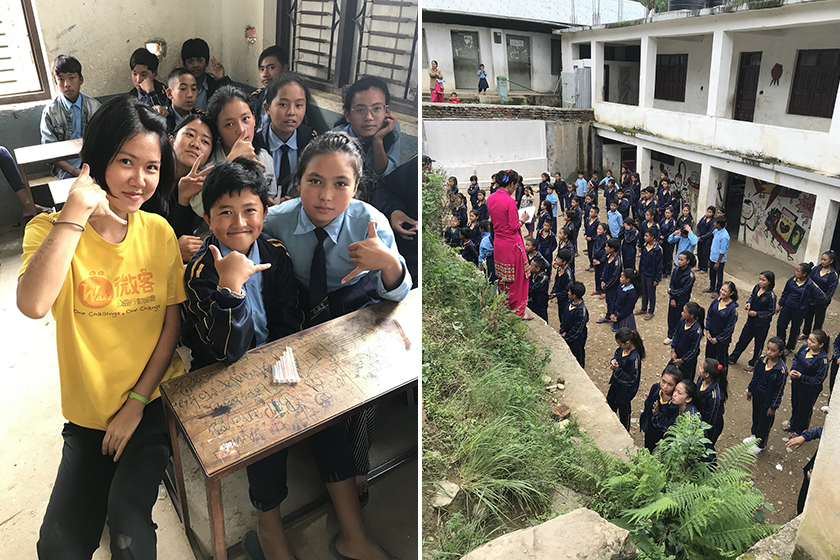 |
| ◆學校的外觀與教室內部 |
在服務的過程中除了保護自己的安全外，最重要的事情就是保持彈性，到當地我們才知道要住在哪、要吃什麼，我們休息的地方是學校旁一間小小的教堂，雖說是教堂但其實我覺得有點像沒有住動物的牛舍，底下是黃土地板，我們喝的水是山上流下來的山泉水，也就是溪流裡的水，好險這12天結束並沒有因此吃壞肚子，大家反倒是比較擔心便秘的問題。我們待的學校最小的寶寶班有些還不會說話，最大的差不多是台灣國中生的年紀，所以我們也會因應各班年齡改變教學狀況，年紀小的班級其實準備的教案通常都用不太到，就是人到現場陪孩子們玩就好，要小心背要記得靠牆，不然孩子可能會直接從你背爬上去從頭上翻下來，但給孩子們紙和畫筆之後，一個個都安靜地開始畫畫。
| 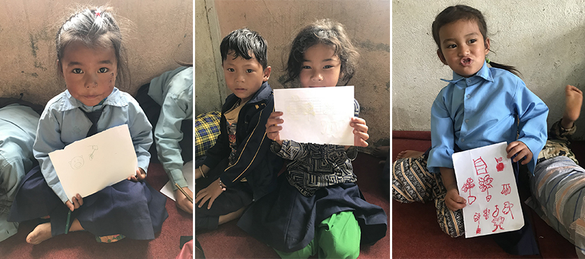 |
在和當地的NGO工作者Lucas及Kabel討論過後，我們想要一起改善當地隨處丟棄垃圾的習慣，雖然教室都有垃圾桶，但對孩子們來說把垃圾撿起來丟到垃圾桶是一件「很怪的事」，因為大家都在亂丟在地上，為什麼我就要丟到垃圾桶？我們決定當領頭羊帶著孩子一起撿垃圾，讓孩子們知道把垃圾撿起來事一件很正常也很正確的事，很感動後來這個活動有漸漸發酵，在陪孩子們玩的過程中，他們會自發性地問說需不需要把地上的垃圾撿起來。
| 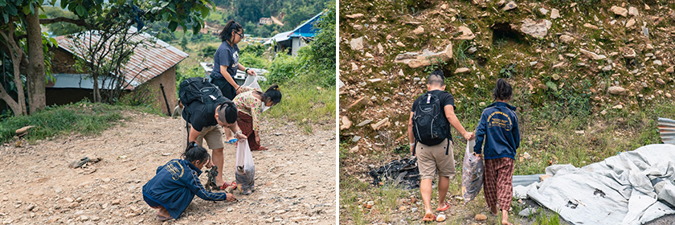 |
雖說是跟隨梯隊來進行兒童教育，但其實我很怕小孩，不知道該怎麼跟小孩相處，但是為了要去尼泊爾，我想要學習面對自己的恐懼，剛開始到Bhardev的時候看到有些隊員可以和孩子們玩得這麼開心，心裡真的很緊張，後來慢慢發現原來愛他們的方式就是陪伴，他們做什麼我們就一起做什麼，他們就能夠感受到我們的愛，像是孩子們喜歡湊過來幫我們編辮子，我們就一起玩互相綁頭髮的遊戲，他們圍一圈在玩團康遊戲我們就加入一起跑跳，孩子的心很單純，喜歡你就抱你。
| 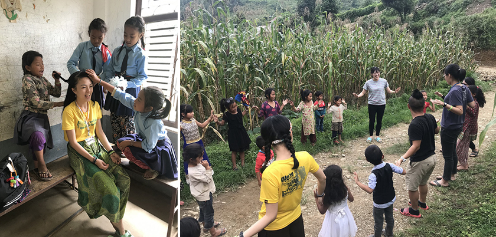 |
關於尼泊爾的食物
親自認識他們的文化也是我此行非常重要的目的，用我的眼睛去看他們的風景和地形，用耳朵去聽他們對話，用我的嘴巴去嘗試他們的食物，因為食物會受到地形、氣候以及民族的影響，所以食物是認識當地文化很好的方式，我們的第一餐尼泊爾料理是在首都加德滿都的Hity Café吃Momo，Momo其實就是我們的水餃或是包子類的東西，類似Dumpling泛指所有麵團包肉的食物 (100 尼泊爾盧比 = 26.3084 新台幣)。沒錯尼泊爾人也吃水餃，因為尼泊爾地處印度跟中國的交界處，受到兩國的文化影響很深。
| 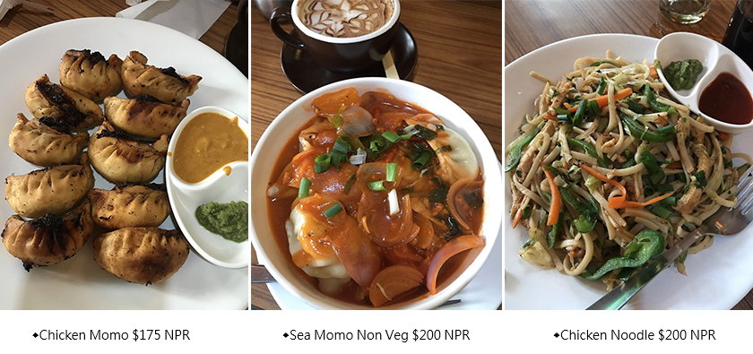 |
行程的頭兩天還在市區所以吃的部分比較有選擇，之後到山區的服務據點後就是無限的咖哩迴圈。尼泊爾人在早餐前會先喝早茶，所以我們8點會先喝早餐茶Masala tea，印度語就是香料茶的意思，裡面會加薑，我猜是為了祛寒吧。9點正式吃早餐的時候會換成加了奶的Masala tea，變成奶茶又更好喝了，尼泊爾的主食也是米飯，早餐除了奶茶以外通常吃飯、花生餅乾、草莓醬吐司或雞蛋，也有吃過飯配鷹嘴豆。午晚餐通常都是吃咖哩澆飯，裡面一定會有馬鈴薯，另外可能會加青菜或是秋葵，我也是過了好多天才知道自己在吃秋葵，味道不會很重，只剩青菜脆脆的口感，通常還會有燉豆子，我竟然吃了一個多禮拜咖哩都沒吃膩，有時候小廚娘Urmila會做一些蝦餅、炸餅或是炸Momo，我們也會一起進去學，像揉麵團我覺得非常好玩，之前在手工披薩店練就的功夫竟然有一天派上用場。
| 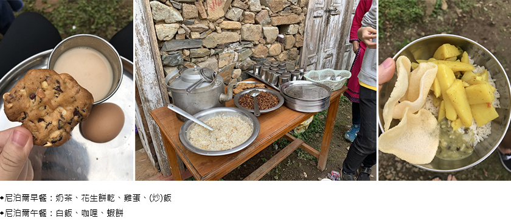 |
在吃了好多天的咖哩後，我們決定去買雞肉回來炸鹽酥雞，每天吃素真的很容易餓啊，炸雞是台灣的國粹，怎麼可以錯過這個國民外交的機會，很巧的因為我之前準備的教案有帶太白粉，我們一行人就開始在廚房炸了雞肉、洋蔥、豆子跟薯條，外加番茄炒蛋，可惜Urmila跟Kabel人雖然誇我們做的好吃，但默默去煮咖哩來吃，似乎還是吃不習慣覺得只吃這樣配飯很乾。
| 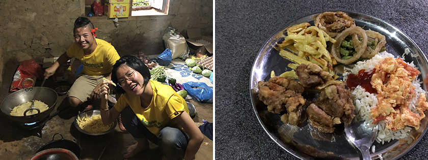 |
| ◆在尼泊爾做鹽酥雞 |
關於尼泊爾文化與加德滿都
雖然是跟著國際志工的行程，但對我來說就是一趟認識尼泊爾的旅行，比起跟團更能夠與當地居民一起生活一起比手畫腳聊天，這次的尼泊爾之行大部分的日子都待在山區，鄉下的生活方式跟城市確實有些差異，在鄉下的時候人與人的相處建立在最原始的愛，孩子們喜歡你就親親你抱抱你，拉你的手想要你陪她一起回家或是帶你去美麗的地方玩，但在城市裡很多強迫推銷，開高價的商人，好像回到了現實，我想如果我自助來玩只待在首都的話可能就沒辦法感受到尼泊爾的質樸。
| 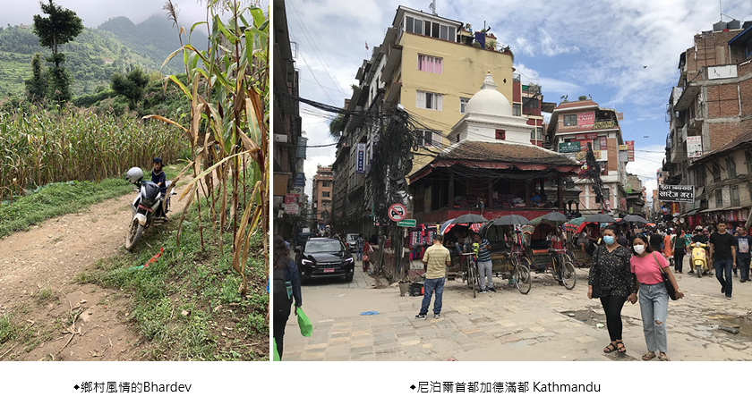 |
很想體驗看看印度的Henna tatoo，所以買了顏料請Urmila幫我畫畫，在尼泊爾Henna叫Mehndi，他擠出來顏料有點像泥巴，畫在手上大約半小時後就會乾掉，剝掉之後就會變成褐色的圖騰在手上，靜置越久顏色越深越持久，我們的隊員Apple是設計系的學生，他也用Mehndi幫我們畫曼陀羅的圖騰。
| 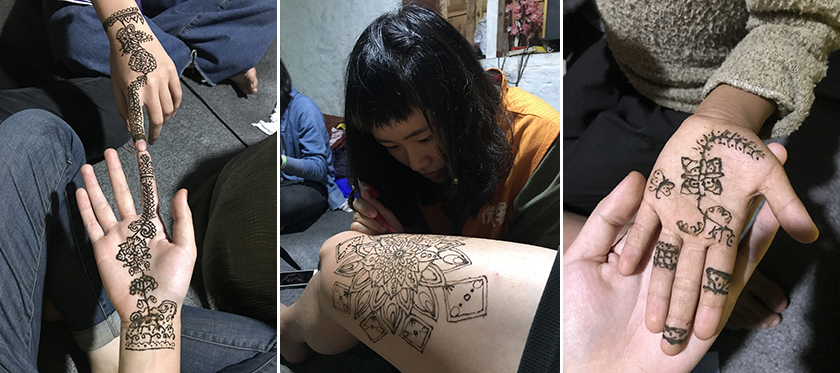 |
以前在印度電影裡看過紗麗，但其實在尼泊爾鄉下大家幾乎都是穿Kurta，只有在首都的時候會看到有些人在穿紗麗，我看18歲的Urmila會把Kurta加上牛仔褲的穿搭，感覺結合了時尚跟傳統，超酷的啦。
| 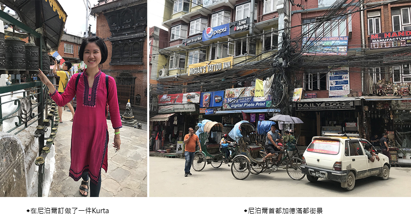 |
首都的觀光行程就是參觀超多寺廟，這間寺廟有很多的經輪。Swayambhunath Temple 因為猴子很多所以也稱為猴廟，我猜那些猴子可能是想來修行吧，不過他別被他們無辜的外表騙了，他們超兇還會搶遊客的食物。
| 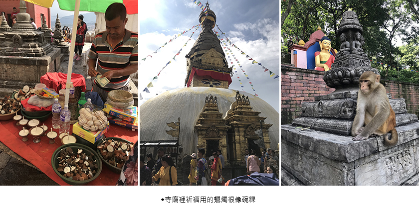 |
夢想花園 (The garden of dreams) 就是個漂亮的花園，很好拍照，給網美去的那種，沒特別好玩，而且要收門票。尼泊爾的街上很多這種小小的塔，有點類似我們的土地公廟。
| 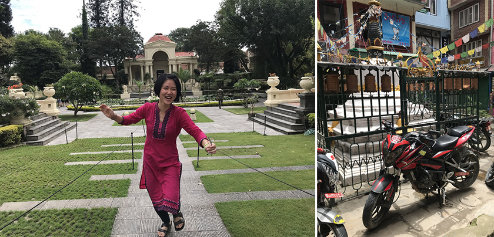 |
很開心這輩子有機會可以認識尼泊爾的文化，見識到在地球另一端的人類正在用不一樣的方式生活，每一次的旅行都是一個歸零的機會，用孩子般好奇的眼睛去填滿自己。